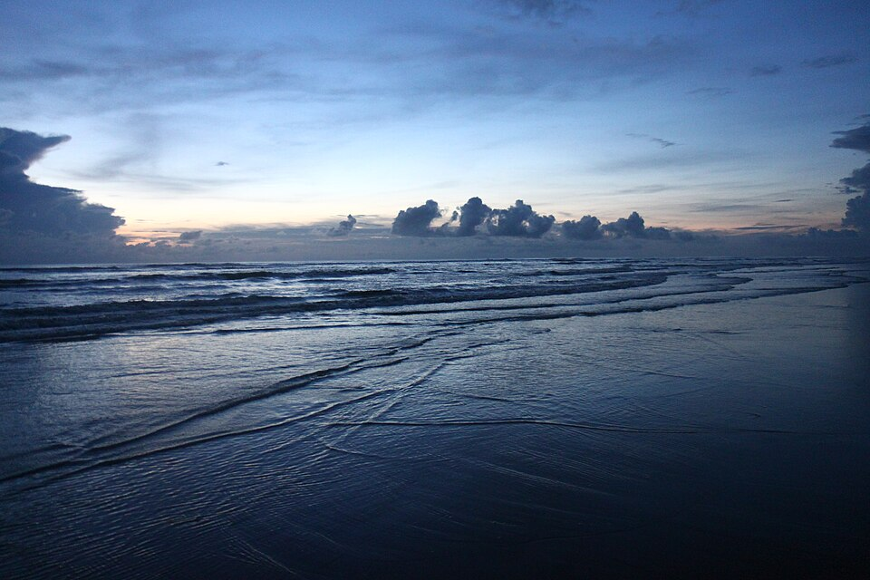
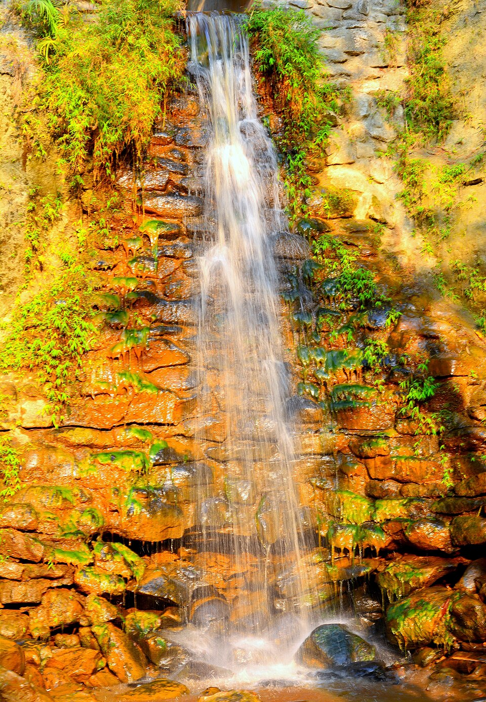
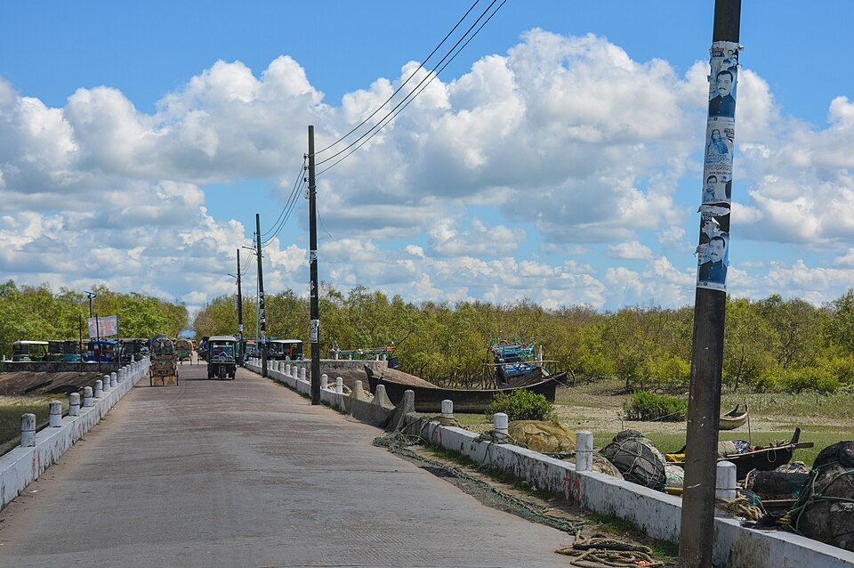

When to Visit
Choose your season

November — February
Peak Season
The best time to visit — cool and dry with temperatures of 18–25°C, calm seas, and maximum visibility. Saint Martin's Island ships run through January 31st, Cox's Bazar departure only, under a daily visitor cap. The beach is at its most beautiful and most crowded. Book accommodation well in advance, especially during public holidays.

March — May
Shoulder Season
Warm and significantly less crowded than peak — temperatures rise to 28–32°C. Good beach conditions through April. By May the humidity builds and the first pre-monsoon storms begin, marking the start of the region's cyclone season — worth checking the forecast in the days before a May visit. The island is closed to tourism from February through October to protect its coral reef. Prices are lower and the experience is more local.

June — September
Monsoon Season
Heavy rain, rough seas, and almost no tourists — but the hills are intensely green, the waterfalls at Himchari are at full force, and prices drop 40–60%. Swimming is not advisable. Island boats are suspended. For landscape photography and solitude, this is actually the most remarkable time to visit.

October
Transition
The overlooked sweet spot — the rains ease, the landscape stays green from the monsoon, the seas begin to calm, and the crowds haven't arrived yet. October sits at the tail end of the region's cyclone season, so it's worth checking the forecast in the lead-up to a visit. Boat services resume November 1st under the new regulated season. Prices are still low. Sunsets are extraordinary. If flexibility allows, October is one of the most rewarding months to visit.